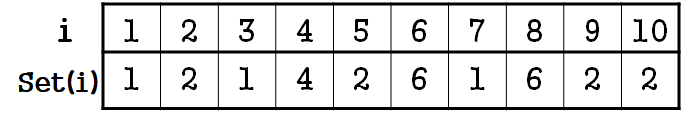
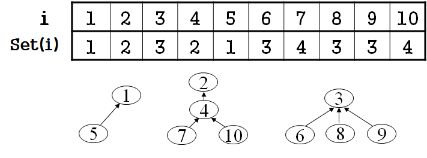
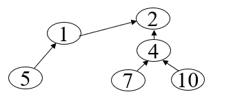
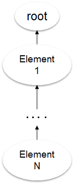
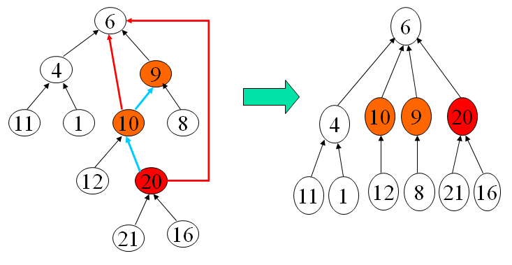

经典算法&数据结构|并查集
并查集|Disjoint Set
并查集是一种树型的数据结构，用于处理一些不相交集合的合并及查询问题。常常在使用中以森林来表示。
英文：Disjoint Set，即“不相交集合”
并查集将编号分别为 的 个对象划分为不相交集合，在每个集合中，选择其中某个元素作为代表，表示它所在的整个集合。
常见两种操作：
- 合并两个集合
- 查找某元素属于哪个集合
所以，才称为“并查集"
生活举例：
学校以班级将学生划分成不同的集合，而这些集合班级以班长作为代表。
实现方式一
用编号最小的元素标记所在集合；
定义一个数组 ，其中 表示元素 所在的集合

从上表中可以看出，1、3、7 的 set 值均为1，表示1、3、7属于同一个集合，该集合以1为代表。
同理就可以得到如下的几个集合（划分）：
{1,3,7}, {4}, {2,5,9,10}, {6,8}
查找
经过上面的描述，我们知道可以用set数组查找某个元素所属的集合（的代表）。
因此想要实现“找班长”的操作很简单：
1 | find(x){ |
时间复杂度.
合并
合并指的是把两个集合合并起来，也就是说想要合并的两个集合内的元素其set值需要统一并修改成新的“班长”。
1 | Merge(a,b)//a,b是两个班长 |
上述代码给出的以 “合并后数值小的元素做班长” 的原则得到的合并函数
时间复杂度.
可见，想要实现合并，就必须搜索所有的元素，时间复杂度是固定的。
因此我们需要寻求其他的方法来实现并查集，这时我们考虑到图论/数据结构中常见的二叉树概念。
尝试利用 树结构 来实现。
实现方式二
首先我们规定，每个集合用一棵“有根树”表示
定义数组 set[1…n]
- set[i]=i 表示自己即是本集合的代表，也就是集合对应树的根
- set[i]=j , 且 j 不等于 i ，表示 j 是 i 的父结点
值得注意的是，与 实现方式一不同，这里的 仅仅代表父结点，而不是祖先结点。
如下图所示：

实现方式一 仅仅是类似上图中的以3为根的那个集合。
而 实现方式二 的思路最明显的体现就是上图中以2为根的集合
查找
由于 set 只保存本元素的上级，所以查找需要一层层往上找，直到集合的根即可
1 | find(x){ |
最坏的情况，也就是这棵树深度正好为元素个数时，其时间复杂度为，
而一般情况下为.
合并
直接将其中一个集合的根的上级属性改成另一个集合的根即可
如下图所示，把原本是1为代表的集合合并到2为代表的集合中去：

1 | merge(root1, root2){ |
时间复杂度.
路径优化
最坏的情况时，树深为，如下图所示：

改进方法： 将深度小的树==合并==到深度大的树
合并顺序任意，这样操作以后，包含 个结点的树的最大高度不超过
因此，合并函数可做如下修改：
1 | merge(a,b){ |
这样合并的好处使得最坏情况得以规避，查找的时间复杂度始终为.
路径压缩
是否还能再优化？
当我们完成建立并查集，以后需要多次查找时，每次都调用find()函数都需算一遍。
因此考虑在每次查找时都进行一个保存查找结果的功能（思想类似于记忆化搜索）。
1 | find(x){ |
上述方法被称为 路径压缩，示意图如下：

实践出真知
例1：畅通工程
HDU 1232
题目描述：
某省调查城镇交通状况，得到现有城镇道路统计表，表中列出了每条道路直接连通的城镇。
省政府“畅通工程”的目标是使全省任何两个城镇间都可以实现交通
（但不一定有直接的道路相连，只要互相间接通过道路可达即可）
请问，最少还需要建设多少条道路？
分析：
通过已知的路线可以构成 个生成树。
要使这些道路能够四通八达，需要将生成树都连接起来，所以还需要 条道路。
因此问题转化为求最小生成树的数目问题
Tips：事实上，通过依次读数来生成集合的过程就是等价于读一条边合并一次树（只有一个元素的也算树）的过程。
1 |
|
例2：小希迷宫
HDU 1272
待更